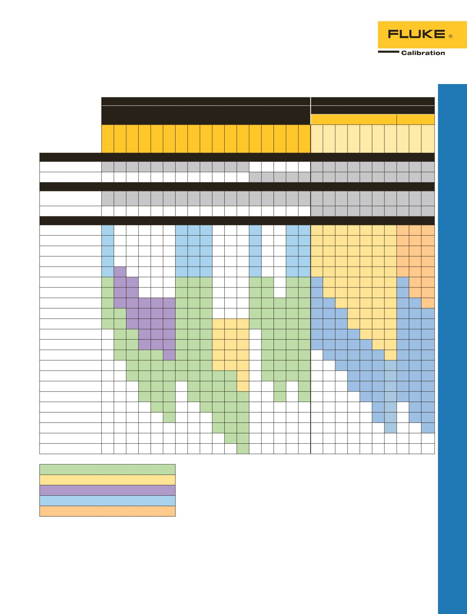

7350
PPCH-G
7615
PPCH
RPM4
7050
Hochdruckregler-
Gasregler/
Kalibratoren
Hochdruck-Gasregler/
Kalibratoren 7350
Sicherer, benutzerfreundlicher
und effektiver Hochdrucktest und
Kalibrierung.
•
Bereiche bis 70 MPa (10 k psi,
700 bar)
•
Genauigkeit bis 0,01 % vom
Bereich
•
Regelungsstabilität
0,007
% des Bereichsendwerts
Hochdruckregler-Gasregler/
Kalibrator PPCH-G
Breiter Regelbereich und Flexibilität
mit präziser Hochdruck-Gasregelung.
•
Bereiche bis 100 MPa (15 k psi)
•
Eines oder zwei interne Q-RPTs mit
großem Turn-Down-Bereich
•
Kann mit Referenzdruckmonitor
RPM4 als integrierte
Ferndruckreferenzen für zusätzliche
Q-RPT-Bereiche verwendet werden
Hydraulikdruckregler/
Kalibrator 7615
Einzigartige Hochgeschwindigkeits-
lösung für die Hochdruckkalibrierung
und -prüfung.
•
Bereiche bis 280 MPa (40 k psi)
•
Genauigkeit bis 0,01 %
vom Bereich
•
Mit einer Vielzahl von Flüssigkeiten
erhältlich, einschließlich Wasser
•
Hochgeschwindigkeits-
Druckregelung
Hydraulikdruckregler/
Kalibrator PPCH
Breiter Regelbereich und
Flexibilität mit präziser
Hochdruck-Hydraulikregelung.
•
Bereiche bis 200 MPa (30k psi)
•
Eines oder zwei interne Q-RPTs mit
großem Turn-Down-Bereich
•
Hochgenaue Regelung in einem
großen Bereich
•
Kann mit Referenzdruckmonitor
RPM4 als integrierte
Ferndruckreferenzen für zusätzliche
Q-RPT-Bereiche verwendet werden
Referenzdruckan-
zeiger
Referenzdruckmonitor RPM4
Messleistungen der Spitzenklasse
in einem kompakten und robusten
Instrument.
•
Eines oder zwei unabhängige
Quarz-Referenzdruckwandler-
Module (Q-RPTs) mit einzelnen
Schutzsystemen (SDS
™
, Self Defense
System), um Überlastdruck
zu vermeiden
•
Infinite Ranging und AutoRange
™
•
Differenzmessungsmodus
(Kanal 1–Kanal 2)
•
Spezielle Version erhältlich für
Luftdatenbereichseinheiten und
-funktionen, RPM4-AD
•
Als integrierter externer
Referenzdruckwandler für
PPC-Druckregler/-kalibratoren
verwendbar
Digitaldruckanzeigen,
Serie 7050
Einzigartige Messgenauigkeit mit
Langzeitstabilität.
•
Druckbereiche von 0 bis 10 in H
2
O
und 0 bis 1.500 psi (0 bis 25 mbar
und 0 bis 100 bar)
•
Das Modell 7050i bietet hohe
Präzision mit einer Fehlergrenze
von 0,005 % vom Messwert
•
Das Modell 7050 bietet eine
Fehlergrenze von 0,003 % vom
Messbereich-Endwert
•
Aktivmatrix-Farbdisplay mit erwei-
terten Navigationsmenüs
•
Das Modell 7050LP bietet eine
Messgenauigkeit von 0,005 % des
Messwerts von sehr niedrigen
Drücken.
31
Druckkalibrierung